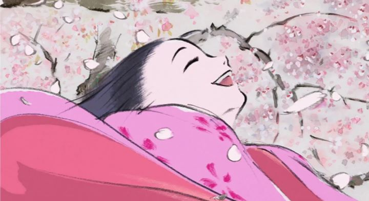

When talking about Studio Ghibli, there are two directors given credit for creating most of their films: Hayao Miyazaki and Isao Takahata. When discussing the most popular or memorable films associated with Ghibli, it is Miyazaki's work that gets named. But what about Takahata's movies? His early "Grave of the Fireflies" remains one of the most well-known World War II stories in animation, but you would be forgiven in saying you had never even heard of his other Ghilbi movies: "Only Yesterday," "Pom Poko," and "My Neighbors the Yamadas." While I respect all of these movies and respect Takahata as a fine director, if I had to rank the catelog of Ghilbi, Takahata's films are typically near the bottom. After 1999, over a decade would pass without any new output from Takahata: would he ever create a masterpiece to define his career?In 2013, after several years of hard work (Takahata increasingly became infamous for taking a long time to finish anything), he finished and released "The Tale of Princess Kaguya," an adaptation of the classic Japanese folk tale of "the Bamboo Cutter." While I go into more detail later, I'll cut to the chase now: it is the best film Studio Ghibli has ever made. This is not open for discussion. It is the finest work of art they've output before or since, and a reminder why Takahata is so respected among anime fans who know his films. Even by a master, it is a rare example where hard work and skill come together to create something so powerful. The original story has something to do with an old bamboo cutter discovering a tiny princess living in one of the stalks of bamboo he cuts. Respecting the princess and the treasure she came with, he takes her home to his wife, both without children, and are surprised when the princess morphs into a baby girl, one to call their own in the years that follow. The princess grows up quickly, and the new parents use their new-found wealth to support her, with nothing but the finest clothes and status of royalty. Many rich and powerful suitors would come to ask for her hand in marriage, which the princess cleverly disuades by insisting on impossible tasks or gifts to prove their love. In other works, Kaguya is also refered as a "Moon princess," which hints at where she came from and where she ultimately must return by the end. The movie "The Tale of Princess Kaguya" follows the story closely, but takes its time doing so. The child years of Kaguya are rendered in detail, portraying even simple moments between her and her loving parents, the type of moments that any parent would smile in reminiscing. There are moments of humor and innocence, as well as intense drama when Kaguya realizes, despite her parents' best intentions, that she longs for the simplier life of her youth with her friends over the life of a rich princess. Not everything is explained (such as WHERE the initial sources of wealth came from, or why they came), but I can't help but respect the grand story being told here, told in a way that only director Takahata could have done. Slowly, sometimes too slowly, but not a single minute wasted.More importantly, the visuals and animation of this movie are exquisite. Apprently, after much hard work and research trying to reproduce a "illustrated-on-paper" style in "My Neighbors the Yamadas," Takahada did not rest until perfecting the process for "Kaguya," using whatever resource available, be it computer software or simply long hours of work at the hands of the animators. The result is one of the most beautiful examples of animation. The art looks as close as we've had to traditional Japanese ink paintings in motion, using white space often, and sparringly using color alongside strong black ink strokes. The animation itself varies, sometimes shifting to computer animation techniques to a lesser effect for camera movement not otherwise possible to make, and sometimes producing the most incredible examples of motion I've ever seen. If you don't like anime? "Kaguya" doesn't really look like anime, or like any other Ghibli film, even if the general quality is distinctly such that it could only come from this studio. Anyone who has any appreciation for animation as an art form simply must watch "Kaguya," with no excuses. I haven't seen an animated film, one that tells a proper story, come so close to being "art" in every sense of the world. Similar descriptions can be said of the soundtrack. Like the white spaces of the art, the music is used sparringly, but effectively. Against the symphonies common in Ghibli movies, this is their most haunting, and perhaps my favorite, soundtrack. The English dub made for the movie is strong, respecting the story, but the thoroughly Japanese setting, story and art style almost demands that it be watched with the original Japanese dub. As a whole, the production of the audio is able to almost match the incredible visuals, which is no small feat in itself.Again, Studio Ghibli has made a lot of movies. Most of them are considered mandadory classics. But I cannot stress how significant an achievement "The Tale of Princess Kaguya" is, not just to Ghilbi, but to Japanese cinema. It's critical brilliance is on par with Walt Disney's "Snow White and the Seven Dwarves," or Cartoon Saloon's "The Secret of Kells," or Slyvian Chomet's "The Triplets of Belleville." All of these films beautifully protrayed a story and setting that would define the careers of their artists and be a distinct portrayal of their country, culture and the skill of their people. The films I list happen to be the first films of their groups, but "Kaguya" was made late, near the end of Ghibli's era. To improve enough to reach such a high, when most struggle to simply match what they'd achieved in the past, is a triumph. This is part of Takahata's legacy, a man who long strived to improve with each movie, and to make something beyond anything seen before in animation. That "Kaguya" is not as well known or talked about as often as the other movies I mentioned is a horrible injustice. I can't urge you enough to see it.According to interviews, Isao Takahata said he was interested in creating more films, even after his younger collegue Miyazaki formally announced his retirement. Not surprisingly, this would never come to be, when Takahata passed away in 2018. Personally, I am simply thankful for what this man has made, most of all "The Tale of Princess Kaguya." Just in time, he was able to finish what I consider to be Studio Ghibli's shining masterpiece, a grand treasure that everyone should experience.
- "Ani" More reviews can be found at : https://2danicritic.github.io/ Previous review: review_The_Sky_Crawlers Next review: review_The_Tatami_Galaxy